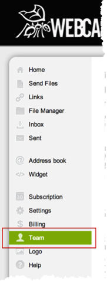

Sign in to Webcargo. Click your user name, and then select Settings. Note the URL that appears.
On the left menu, select Team, as shown below.

Copy the following link to the Sign-on URL into step 2. Do not click View setup instruction again, as shown in step 2.
Sign into the Okta Admin dashboard to generate this value.Copy the following Certificate in PEM text format and paste it into step 3.
Sign into the Okta Admin dashboard to generate this value.
Select Save.
On the Okta Dashboard for the Webcargo application, select Okta username for the Default username format, as shown below.